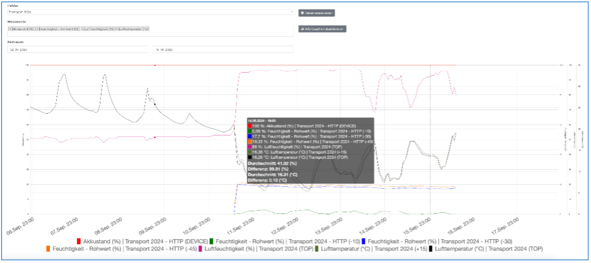
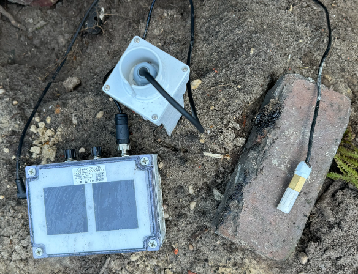

Versuchsflächen in der Baumschule Bonk – Aktueller Stand und Ausblick
Die Testphase in der Baumschule Bonk nähert sich dem Ende. Michael Malms aus Bad Zwischenahn gibt uns ein Update zur finalen Versuchsphase.
Das NuTree-Projekt befindet sich derzeit in einer entscheidenden Phase. In dieser letzten Testperiode liegt der Fokus darauf, die jüngsten Innovationen der Sensor-Hardware und -Software zu evaluieren und wertvolles Praxis-Feedback zu sammeln. Hierzu werden die Versuchsfelder noch einmal angepasst, um den Testumfang zu erweitern.
Besonders interessant ist die Einführung eines neuen Sensortyps des SMT-100. Dieser dielektrische Sensor soll als zusätzlicher Vergleich dienen und weitere Erkenntnisse liefern. Die Beschaffung der dafür benötigten Infrastruktur ist bereits im Gange, und sobald alle Komponenten vollständig vorliegen, werden die neuen „Sensor-Ensembles“ eingerichtet.
Dieser Umbau und die Optimierung der Sensorik stellen sicher, dass das NuTree-Projekt mit guten Voraussetzungen in die finale Phase geht. Es bleibt spannend, welche Ergebnisse die letzten Tests liefern werden und welche Perspektiven sich daraus für die Praxis eröffnen.
- In den Quartieren „OE 13/2“, „BB“ und „Hüppe“ sind bereits zwei Climavi-Stationen im Einsatz. Zusätzlich sollen hier zwei Funkköpfe mit jeweils zwei Tensiometern und zwei SMT100-Sensoren installiert werden.
- Darüber hinaus werden drei neue Stationen aufgebaut, die ebenfalls mit einem Climavi-System, zwei Funkköpfen, jeweils zwei Tensiometern und zwei SMT100-Sensoren ausgestattet werden. Bei diesen Stationen sollen zudem Messpunkte in Quartieren ohne Gießrand an Gehölzen eingerichtet werden, um das Sensoriksystem auch unter veränderten Bedingungen zu testen.
- Ergänzend entstehen drei weitere Stationen, die jeweils zwei Funkköpfe mit zwei Tensiometern und zwei SMT100-Sensoren umfassen, um die Datengrundlage weiter zu verbessern und umfassende Vergleichsmöglichkeiten zu schaffen.
Bsp. Sensor Konfiguration „OE13/2“
Die Versuche in den kommenden Monaten sollen die Basis für eine fundierte Empfehlung zum Einsatz der Climavi-Sensoren im Baumschulbereich, insbesondere im Freigelände, schaffen. Dabei wird ein abschließender Vergleich mit anderen Sensoren ebenso entscheidend sein wie die Bewertung des Aufwands bei der Installation, etwa durch Bohren oder Einschlämmen, sowie die Zuverlässigkeit der daraus abgeleiteten Gießempfehlungen.
Es hat sich zudem gezeigt, dass eine Messtiefe von 10 cm im Freigelände kaum aufschlussreiche Daten liefert. Daher ist geplant, den Sensor insgesamt tiefer zu installieren, sodass der Messpunkt bei etwa 30 cm liegt. Zusätzlich wird auf diese Weise ein weiterer Messpunkt in einer Tiefe von 65 cm gewonnen, der wertvolle Einblicke in die Bodenfeuchtigkeit in tieferen Schichten ermöglicht.
Ein zentrales Element der letzten Projektphase ist das offizielle Climavi-Dashboard, das als Produkt angeboten wird. Hierbei werden wesentliche Funktionen, die zuvor in einem NuTree-Derivat dieses Dashboards getestet wurden, in die finale Version übertragen. Dies ist ein entscheidender Schritt, um die Produktversion aus der Perspektive von Baumschulanwendern praxisnah zu prüfen und weiter zu optimieren.
In Zusammenarbeit mit Agvolution wurden folgende Funktionen besprochen, die in das System integriert werden sollen:
- Gleichzeitige Darstellung mehrerer Sensoren im zeitlichen Verlauf
- Option, Rohwerte als Eingangsgröße zu nutzen, um die Dynamik der Messungen zu optimieren
- Einfügen von Schwellenwert-Triggern für Trockenanzeigen, die als Linien in den Grafiken sichtbar sind
- Vertikale Verschiebung dieser Schwellenwert-Linien zur Feinjustierung
- Darstellung der Niederschläge in den Grafiken
- Integration der Gießempfehlung mit Angabe der erforderlichen Wassermenge
Parallel dazu bereiten wir uns auf den nächsten Baumtransport vor, der aufgrund der Unwetter in Österreich um etwa zwei Monate verschoben wurde und voraussichtlich Ende Oktober stattfinden wird. Zudem wurde die Sensor-Box von Agvolution weiterentwickelt und um Fühler für Luftfeuchtigkeit und Lufttemperatur ergänzt. Damit können nun folgende Parameter während des Transports erfasst werden:
- GPS-Koordinaten zur Dokumentation des Transportverlaufs
- Luftfeuchtigkeit im Laderaum
- Lufttemperatur im Laderaum
- Feuchtigkeit im Wurzelballen
Alle relevanten Daten zur Bewertung des Baumzustands während des Transports werden so erfasst und alle 30 Minuten in die Agvolution-Cloud übertragen. Das Dashboard für den Transport ist in der folgenden Abbildung dargestellt:
Die folgende Abbildung zeigt die Sensor-Box: In der Mitte befindet sich der Bodenfeuchtesensor, während auf der rechten Seite die Sensoren für Luftfeuchtigkeit und Lufttemperatur zu sehen sind.
 Greta Fenske
Greta Fenske